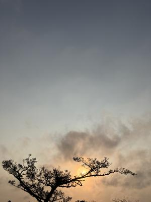
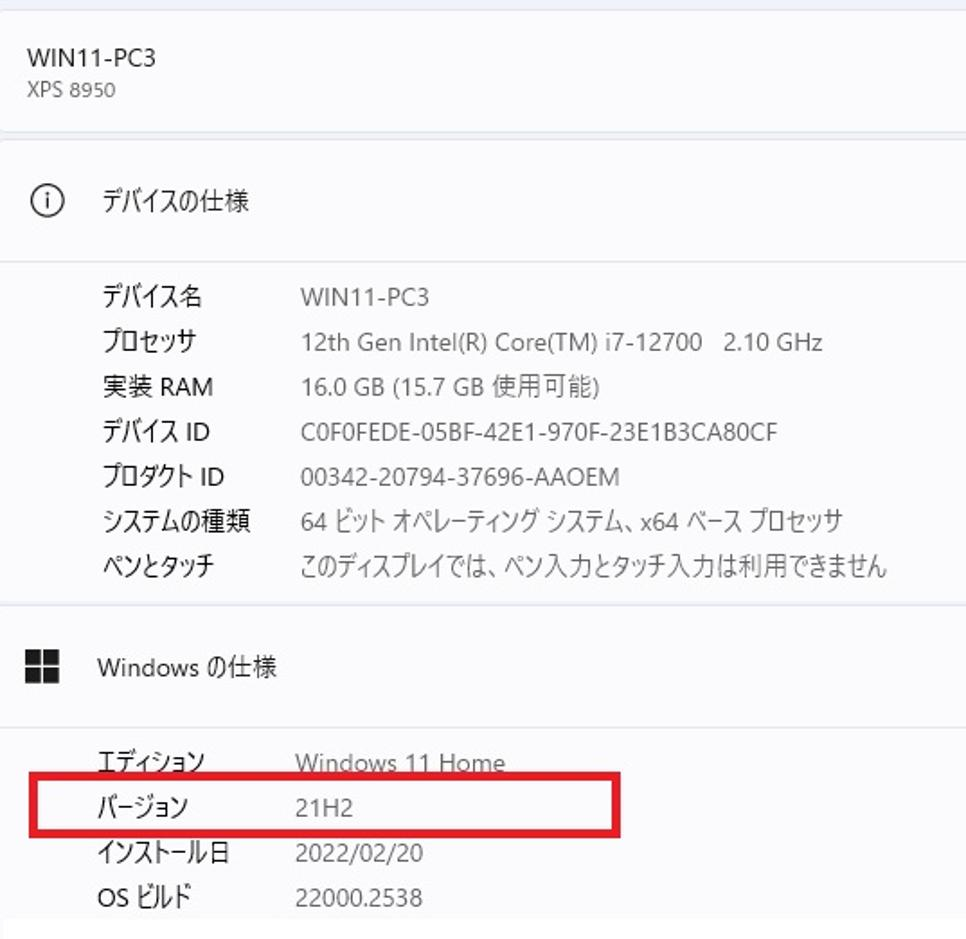
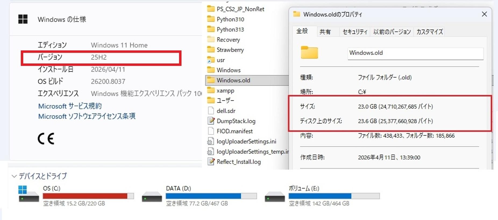

うるがいの話 ある日
最新: PC3のWindowsのupdate【うるがいの話 ある日】とは 一日だけのプログです
『うるがいの話』の最新一日だけのプログで、通信料が少なく経済的だ。カニの画像をクリックすると全ての日付が載る『うるがいの話』サイトを表示します
|
|
【うるがいの話】 うるがい(ｳﾙｶﾞｲ urugai)とは、『もずくがに』の名前でとても大きくなります。 |
|---|---|
|
|
【カミマヤーの話】 猫のことを方言でマヤーといいます。カミマヤー（kamimayaa）とは、神の猫のことです。 |
|
【たながぁの音楽】 たながぁ（ﾀﾅｶﾞｰ tanagaa）とは手長えびのことで、何種類かあり大きいのは車 エビぐらいになります。 |

|
【ぶながぁの話】 ぶながぁ(ﾌﾞﾅｶﾞｰ bunagaa)とは、赤い髪の毛、赤い身体、そして身長は１ｍ２０ｃｍ ぐらい、川の蟹を食べているの目撃された。場所は沖縄県国頭郡大宜味村のと ある村僕の隣近所に住んでいる爺さんから、聞いた話です。 |
|
|
【ギーマの話】 ギーマ(giima)とは、山原の里山に咲くスズランに似た、 花を付けます。実は食べられます、 気が付くと口の周りが紫になっています。 |
2026年04月11日 (土）PC3のWindowsのupdate
21:23

お使いのバージョンのＷｉｎｄｏｗｓ１１のサービスが終了し
ました。サポート継続するなら新しいバージョンのＷｉｎｄｏ
ｗｓ１１をダウンロードしてくださいと表示されてて、ダウン
ロードしたいのですができません。
更新プログラムチェックしても最新の状態です、お使いのデバ
イスには重要なセキュリティ更新プログラムが適用されてませ
ん。更新を完了できるように、デバイスを電源に接続してオン
にしたままにしてください。
私は、どうすればいいのでしょうか
教えてください、下は対処前のＯＳ，２１Ｈ２

で、ひたすらＡＩに教えを乞う。結論、出来た。何年もズーと
放置してきたが、これもＡＩのアドバイスがあればだ。
ＰＣ３は、高性能で初めからＷｉｎｄｏｗｓ１１なのに何故だ
か、アップデートが出来ない！。原因は、デルが出荷時にＴＰ
Ｍを無効にしたからだ、対応はＢＩＯＳでＴＰＭを有効にし、
最新版をインストールした（おっかぶせ）。２時間もかかりま
した。で、出来上がったＣドライブをみると残り１５ＧＢ、こ
の前、２０ＧＢほどＣドライブを整理したばかりだ、削除をし
なければ、容量が足らず泥沼に陥るところだった。つくづく何
て運がいいのだろうと、喜ぶ。増えた原因は、万が一昔に戻せ
すための旧ＯＳの退避データである、安定したら削除する。
下はアップデートの後ＯＳ，２５Ｈ２

４年分も進んだので、コマンドプロンプト画面も微妙に違う。